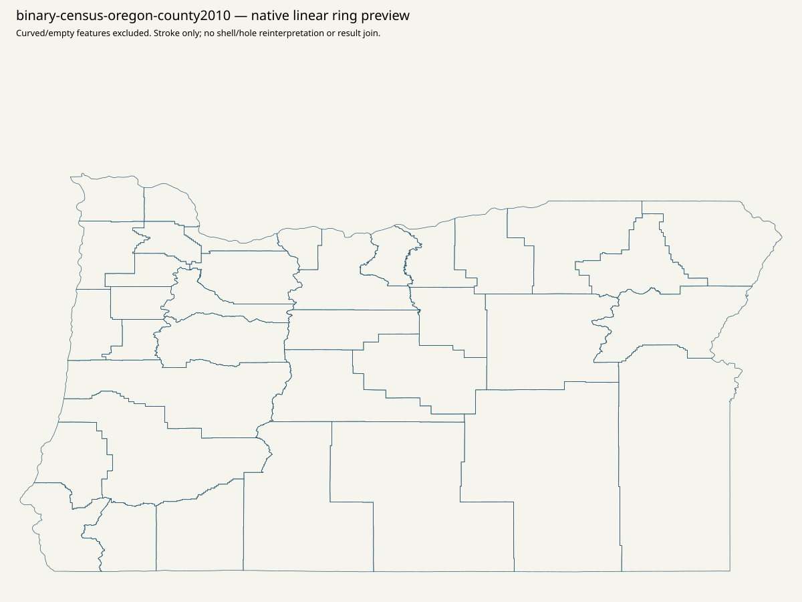

Canonical statewide native order / top15 / minimum80 / priority / remainder: NULL. All36 parents remain in scope. Geographic assets are qualified evidence; no result-leaf polygon joins or spatial vote, ballot or registration allocation.
Static offline navigation filters by county, known-source scope or unavailable parent case. Original parent/source ordering and every full object remain inspectable. Browser Find searches the selected page. No JavaScript or network requests.
| County | Known source records | 2024native membership | Bounded map finding |
|---|---|---|---|
| Baker | 0 | unavailable | SOS Blue Book identifies the county; retained root/clerk requests and the independent county Maps page attempt fail TLS issuer verification. No verification bypass. Search-located planning/assessor maps do not establish an election precinct asset. Only the acquired 2010 county outline is qualified geographic context; current finer IDs, legal precinct geometry and physical voting sites remain unknown. |
| Benton | 0 | unavailable | Records & Elections links Voter Data & Election Maps, the complete April 2024 county precinct/split PDF, January 2026 precinct/split lists, and the public election app. App -> webmap -> ElectionBoundaries service yields 21 precinct features, 19 curved, and 66 split records with all attributes but no returned geometry. WKT and all original coordinates remain exact. These scopes cannot close the unavailable 2024 result-native universe. |
| Clackamas | 118 | known source only | County Elections -> Find my District/Precinct -> Experience item -> webmap -> Voter_Precincts layer yields 121 features, including 55 curved features excluded from linear preview. The 118 literal historical result records retain combined115/116 as one row with two source constituents; printed119 precincts is distinct. Neither count nor matching labels supplies an election-specific crosswalk. |
| Clatsop | 0 | unavailable | Elections links Clatsop County Precincts. Complete countywide 2022 PDF and three complete dense Precinct101 map sheets are acquired. Linked app -> webmap -> Political_boundaries yields 53 precinct features and 121 split features. Source map labels, multipart GIS rows, wards and result units are separate scopes; unavailable 2024 result membership remains unknown. |
| Columbia | 0 | unavailable | County election authority -> Maps and Data retains literal countywide precinct-map, 2016 listing and2022 revision links. Complete2016 precinct listing and two-page2022 line-change publication are acquired/rendered. The exact countywide map_colu_lg.pdf attempt timed out without an acquired body; it is not claimed acquired. Lists/revisions and county2010 context do not establish an approved legal2026 child roster or current result membership. |
| Coos | 0 | unavailable | County Clerk links Registration Totals, Precinct Map & Demographics. The literal 2026 precinct PDF and legislative-district-by-precinct companion are acquired and fully rendered. These are county publications, not an approved current result-ID join. Registration is dated nonvote context. The 2024 result-native universe remains unavailable despite the map. |
| Crook | 0 | unavailable | County GIS Data page explicitly links its public REST directory; Clerks metadata supplies actual layer4 Voting Precincts and layer14 Precinct Splits. Complete native snapshots retain 17 and63 features; four split geometries are empty/nonpolygon in the returned data. CRS2914, source ring defects and all attributes remain. This does not establish result membership or November legal approval. |
| Curry | 0 | unavailable | SOS county authority root and literal clerk route return403 in retained original observations. Bounded official-domain map searches yielded no usable Oregon precinct-map original; similarly named New Mexico resources were rejected. No challenge, login or alternate-host repair. County2010 context cannot supply unavailable current precinct, physical site or result-native membership. |
| Deschutes | 0 | unavailable | Elections -> Voter Statistics & Maps -> Precinct and District Maps -> literal precinctmaps destination leads to a public WebLink browse index. Complete linked district/precinct companion is acquired; a complete precinct geometry/PDF publication was not obtained from that index in this pass. Public index and current result counts do not substitute for finer geometry. County2010 context is qualified separately. |
| Douglas | 0 | unavailable | Root/elections observations are403. Independently located Precinct Maps page is acquired, with literal 2022 listing and large-map links; both PDF attempts return403, retained without challenge retries. Search-visible map date/text is not an acquired original. Unclosed2022 producer candidate/control differences remain untouched and cannot be allocated geographically. |
| Gilliam | 0 | unavailable | Full county root/clerk/election pages were inspected; no qualified precinct geometry/download is exposed in their retained parsed navigation. Bounded county map search found no usable precinct asset. The literal result cty30 route is not a geographic key. Full county2010 outline is available only as parent context; unknown child membership is not an empty precinct set. |
| Grant | 0 | unavailable | County Elections authority and the independently located Maps page are retained. The Maps page concerns county roads/tax maps, not a demonstrated precinct layer. No incidental road-map archive was downloaded. Historical county2010 geometry is parent context only; 2024 result-native membership and current child/legal/physical mapping remain unavailable. |
| Harney | 0 | unavailable | County root, historical elections and independently located Precincts & Districts page return307 bodies without a usable exposed Location. The indexed three-precinct description is not an acquired precinct asset. No redirect/challenge bypass. County2010 geometry is context; historical source-normalization differences and unknown2024 membership remain explicit. |
| Hood River | 0 | unavailable | County Elections literally links Voter Precinct Map and county open-data hub. Complete custom app shell is acquired; its literal script route returned404. No guessed config or layer ID was substituted. The app shell supplies no acquired complete precinct geometry. County2010 outline is context and physical/current/legal/result-ID equivalence remains unknown. |
| Jackson | 0 | unavailable | County Clerk/Elections -> Election Precinct Maps app -> public item/data -> webmap -> exact current Voting Precincts layer0. Complete native55-feature snapshot retains three curved features excluded from linear preview. The old2018-2021 layer is explicitly separate and was not substituted. No 2024 or2026 result membership follows from these geographic labels. |
| Jefferson | 0 | unavailable | County root/clerk and independently indexed Voter Statistics & Precinct Maps page return403. A bounded exact county-owned media/29166 PDF attempt also returns403. No challenge or alternate endpoint bypass. Search-visible2022 map is not acquired. County2010 parent context has no approved finer/current/result or physical-site mapping. |
| Josephine | 0 | unavailable | Literal nested election-map links return404. The independent root-linked GIS page is acquired and literally links Precinct Map. Its item -> webmap supplies exact2022 precinct and split layers, acquired completely at59 and125 features. Split layer retains37 curved features. Municipal/district/site layers were not treated as precinct results or physical polling places. |
| Klamath | 0 | unavailable | Election authority -> Precincts page -> exact app/webmap -> KC_Precincts layer1 yields52 complete native features. Whole urban-growth-boundary precinct map, current adjacent-precinct list and available election scope companions are retained. House districts, city wards, drop boxes and precincts remain separate; the map's urban extent is not countywide legal approval. |
| Lake | 0 | unavailable | County root/clerk and literal GIS Application page are acquired. The page links an Experience app; no complete precinct layer was established in the bounded inspection. The root's state House district PDF is an acquired district-scope companion, not precinct geometry. County2010 context cannot supply missing finer/result/legal or physical-site mapping. |
| Lane | 0 | unavailable | County Elections -> Precinct Maps2022 yields complete countywide, Eugene and Springfield PDFs plus the complete14-page adjacent-precinct list and literal interactive app shell. County map prints February17,2022 and commissioner boundaries effective through December2022. Post2023 public result redaction/request gap remains explicit; no outreach and no use of map labels to reconstruct redacted results. |
| Lincoln | 0 | unavailable | County root/election authority and independently located Maps page are retained. The inspected Maps page points to an assessor GIS search, not a demonstrated complete precinct publication. No tax parcels were substituted. County2010 outline is context only; current precinct units, legal vintage, physical sites and2024 result membership remain unavailable. |
| Linn | 0 | unavailable | County root/election archive and two bounded exact county-owned indexed map/media attempts return403. No challenge/login retries. Indexed precinct008/county map descriptions do not become acquired originals. The complete county2010 outline is context; unknown native membership and finer/current/legal/physical limitations remain. |
| Malheur | 0 | unavailable | County Clerk -> GIS/planning GIS pages -> literal public Experience app shell are acquired. No complete precinct service was established from the inspected shell. Address points, zoning and survey applications are distinct scopes and were not harvested as precinct geometry. County2010 context preserves the parent without inventing native membership. |
| Marion | 118 | known source only | County Elections -> Publications/Forms/Maps -> literal Marion County Precincts webapp. Public item metadata and data both return a complete JSON error entity rather than a usable public item. No authentication or guessed replacement ID. Thus118 full historical source contexts retain parent-only county2010 geography; source labels/counts are not current polygon IDs. |
| Morrow | 0 | unavailable | County Clerk literally links Voting Precincts and Counts, whose raw attempt closes without a response. An independently indexed exact county-owned voter_precincts.pdf alternative also closes without response. The visible2016 five-color-map description is not an acquired original. County2010 is qualified parent context; unknown native/current/legal/physical child mapping remains. |
| Multnomah | 107 | known source only | County Maps and Data/Precincts pages yield the complete2024 individual-map ZIP, the separate2022 precinct-split SHP ZIP and public Experience -> webmap ->300-feature2024 split service. All ZIP members and every map PDF page are retained/rendered; historical SHP196 features is a different vintage/scope. The linked2024 Google Drive page is HTML, not an acquired SHP ZIP. Historical107 result contexts are unjoined, including source raw/admin/method objects. |
| Polk | 0 | unavailable | Elections -> Precinct Maps yields whole2022 county precinct map and whole precinct report, fully acquired/rendered. Separate city maps remain literal links and are not claimed acquired. PDF labels and current result-native membership are unjoined. County2010 outline is independent parent context, not a same-vintage legal outline. |
| Sherman | 0 | unavailable | County Clerk/elections and bounded Planning Department map page are retained. Its map concerns zoning/enterprise areas, not a demonstrated precinct asset; those irrelevant downloads were avoided. County2010 parent geometry does not close the unavailable2024 native roster or establish current/legal/physical/finer IDs. |
| Tillamook | 0 | unavailable | County Precinct Maps -> Precinct Maps2022 -> complete County Precincts PDF acquired/rendered; printed1/1/22 is retained. City-precinct and district scopes are separate, and the map itself disclaims legal/survey use. Historical heading/parser qualifications remain unchanged; unknown2024 result membership is not inferred from this map. |
| Umatilla | 0 | unavailable | County Elections and independently located Precinct and District Maps page yield the whole two-page2026 VotingPrecincts PDF. Page1 prints Last Edited3/20/2026 and reference-only/nonlegal language; municipal wards and precinct subdivisions appear together. All pages rendered, page1 manually inspected. No result-native ID or historical/current/legal crosswalk follows. |
| Union | 0 | unavailable | County Clerk -> Elections literally links whole PrecinctMap.pdf and UC_Precincts.zip. Both acquired; every ZIP CRC/DBF cell/SHP-SHX index/part/bbox/XY bit audited independently. ZIP has21 geometries and DBF Id/Shape_Leng/Shape_Area, not a complete election result-unit dictionary. Raw positions and multiplicity preserved; no orphan-hole reinterpretation or allocation. |
| Wallowa | 0 | unavailable | County Clerk/root -> GIS page acquired. Its parsed links expose map-image navigation and other geographic/emergency scopes, without a demonstrated complete precinct dataset in this bounded pass. No fire/smoke maps or incidental publications were substituted. County2010 is parent context only; current legal/finer/physical/source-native membership remains unknown. |
| Wasco | 12 | known source only | County Clerk -> Find My Precinct Voting Map -> exact app -> webmap -> Voting_Service metadata exposes layer7 Precincts and layer9 Clerk Voting Precincts. Complete native12 generalized precinct and164 clerk split features acquired. Equality to12 result rows does not prove identity. Literal1831-vs1830 source nonvote scopes remain unallocated; one nonsimple ring in each layer is diagnostic only. |
| Washington | 155 | known source only | County Elections -> Election Maps -> Experience -> exact webmap -> Redistrict2021PubService layer8 yields282 complete native features,14 curved. GIS is distinct from155 historical scan/OCR/visual source records. Source row numbers/names are not spatial IDs;301104-vs301105 ballot scopes remain literal. Metro's shared382-feature three-county resource is another qualified parent context, not a label/count/FIPS crosswalk. |
| Wheeler | 0 | unavailable | County Clerk -> Elections -> literal Precinct Info page is acquired. Its literal transformed Wix image URL is downloaded as a display derivative; no thumbnail-ID stripping or guessed full-size original. It is not a qualified complete/native precinct asset. County2010 context remains the acquired parent fallback; current/legal/physical/finer IDs unknown. |
| Yamhill | 0 | unavailable | County elections/Precinct Committeeperson page links an exact public map app -> webmap -> PRCT_41071_112923 layer40. Complete native245 features acquired with all attributes. The layer's literal name suggests a dated product but is not November approval or a result-unit crosswalk; precinct splits/municipal/party-office scopes remain separate. County2010 context is separately labeled. |
Complete Census2010 Oregon county SHP:36 features. Census2020VTD directory has no Oregon entries. Neither is current precinct approval.
